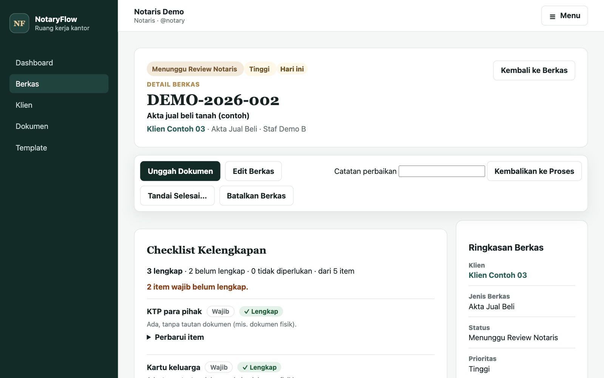

01Problem
Staff at a notary office needed one system to record casework, assign tasks to employees, and keep documentation in one place.
02Data / Context
All data comes from the office's own input: clients, cases, tasks, uploaded documents, and templates. It is stored in a relational SQLite database of 14 tables, with separate tables for document and template versions and an activity log of who changed what.
03Approach
- Case workflow: New → In Progress → Waiting for Notary Review → Completed, with every status change validated on the server.
- Roles: separate notary and employee access; employees see only the cases assigned to them.
- Documents: uploads are checked by file content, not only by extension, and every earlier version stays available.
- Checklists and templates: each case type can carry a requirement checklist, copied into new cases automatically.
- Operational dashboard: SQL aggregates for active, overdue, due-today, review-queue, and urgent cases, plus employee workload.
- Safe data handling: backup and restore with file hashes and database integrity checks.

04Tools
- TypeScript, Node.js
- Application code
- Express, EJS
- Server-rendered pages and routes
- SQLite, SQL
- 14-table schema with hand-written queries and aggregates
- bcrypt, Helmet
- Password hashing and security headers
- Vitest, Supertest
- Automated tests for workflow, access, and documents
05My Role
Individual project: designed, built, and tested by Hugo.